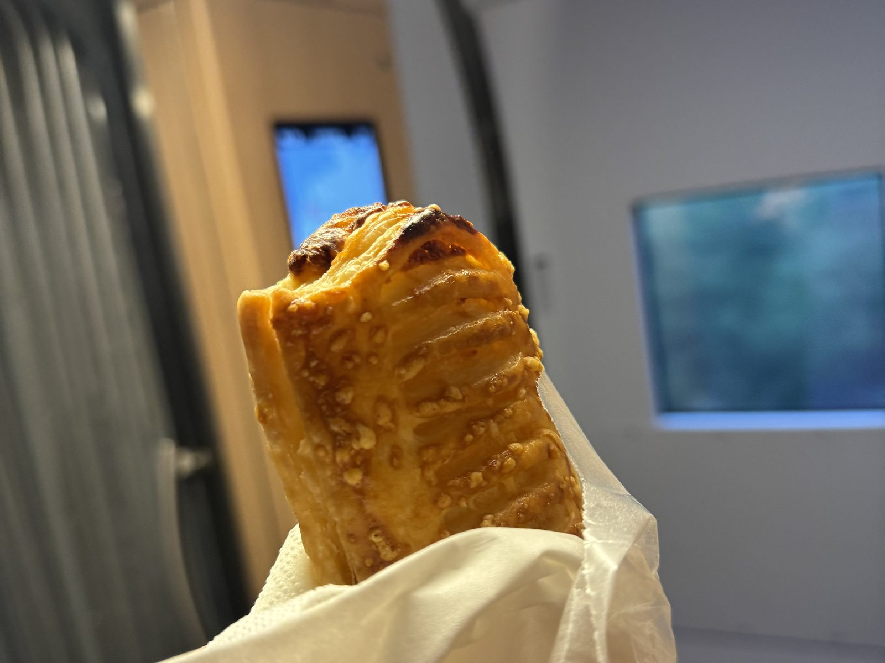
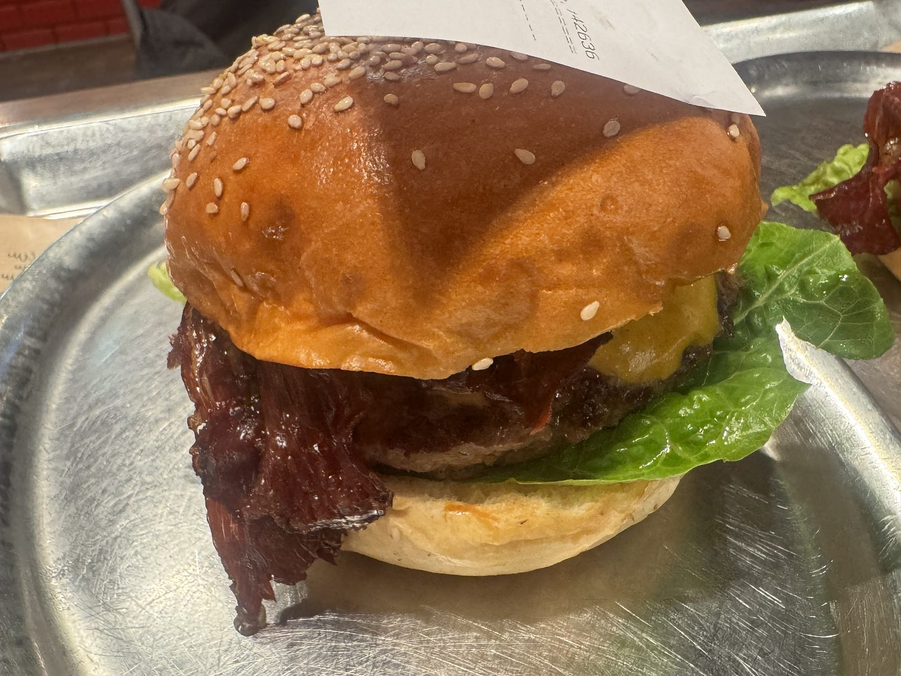
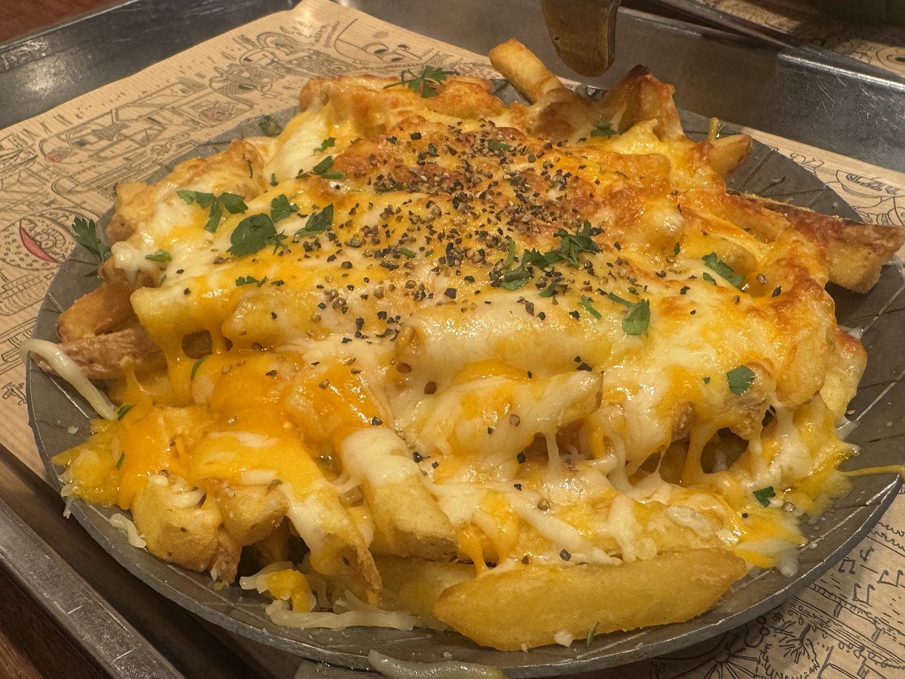
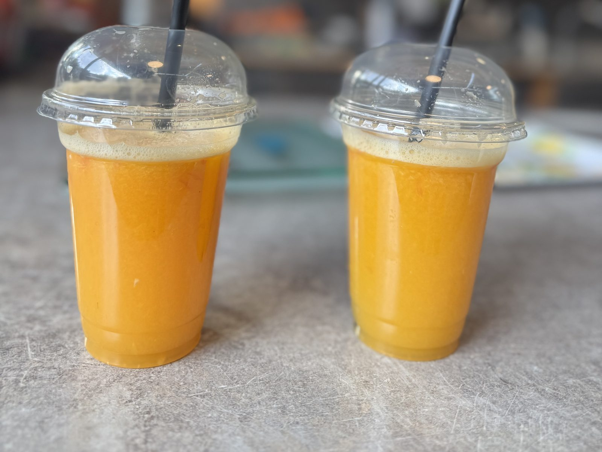
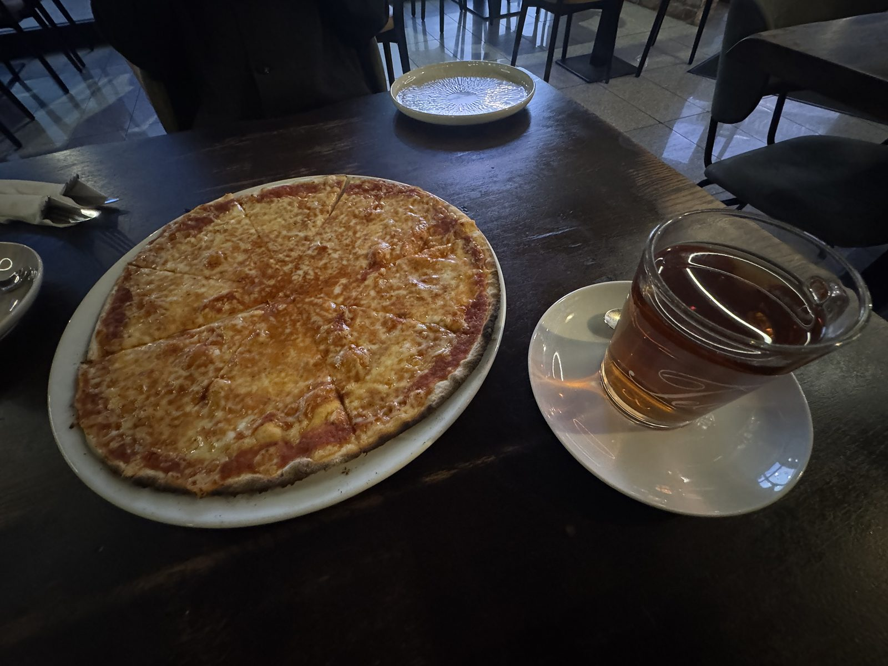
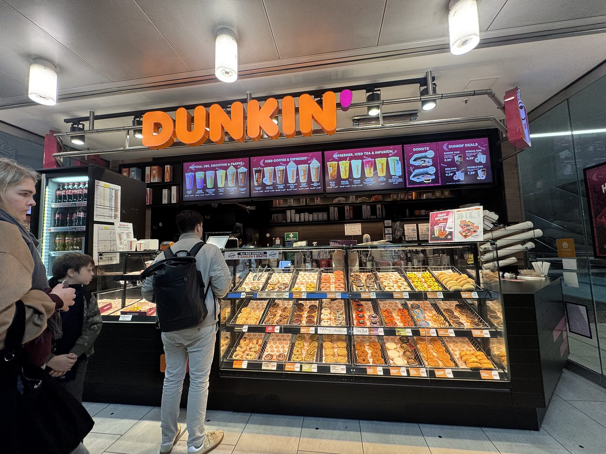

車窓のソーセージパン
10月19日。ブリュッセルからデュッセルドルフへ向かう電車です。
手のなかにあったのは、ソーセージパン。

パイ生地は層になっていて、表面には香ばしい粒。
窓の外が流れるあいだに、旅の朝ごはんは静かになくなっていきました。
日本人街の What's Beef
中央駅から近い、イマーマン通り。
日本人街にある What's Beef で、ベーコンチーズバーガーをいただきました。
ゴマのバンズがつやつやと照り、チーズがとろりと落ちています。
注文番号の紙が、バンズに刺さったまま。金属のトレーの上で、とても格好のよい一品です。

もう一皿はチーズフライ。
チェダーが糸を引き、パセリと黒こしょうが一面に散っています。ポテトの形が、チーズの下でそっと隠れています。

===店舗情報===
店名: What's Beef
リンク: 公式サイト
住所: Immermannstraße 24, 40210 Düsseldorf
市場で絞るオレンジ
旧市街のカールスプラッツ。
Saftladen では、頼んでからオレンジを絞ってもらいます。

カップの縁に、細かい泡。黒いストローが二本、市場の光のなかに立っていました。
一口めで、皮の近い香りがします。
===店舗情報===
店名: Saftladen Carlsplatz
リンク: カールスプラッツの紹介
住所: Carlsplatz（スタンド E2）, 40213 Düsseldorf
マルゲリータと紅茶
中央駅から二十分ほど歩いた店で、マルゲリータと紅茶です。
チーズは縁まで均一に溶け、紅茶はガラスのカップで、澄んだ琥珀色をしていました。

大きな一枚を分けながら、午後がゆっくり過ぎていきます。
旅の途中なのに、この卓だけ時間が止まって見えました。
中央駅のダンキン
日が傾くころ、デュッセルドルフ中央駅のダンキンへ。
ガラスケースの中は、ドーナツの灯で満ちています。

色も形もさまざまで、選ぶこと自体が楽しい。
駅の明かりの下でいただくドーナツは、この日の小さな結びになりました。
まだ、途中
関空を出て四日目。デュッセルドルフの夜まで来ました。
海と肉と、甘いもの。旅は、まだ続いています。
つづく。